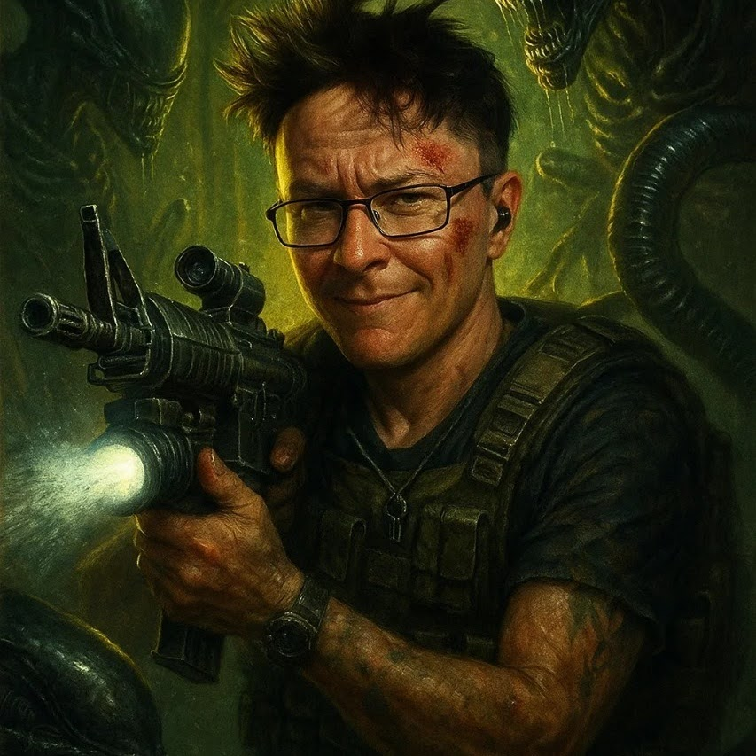

Estudiante de Ingeniería en Programación

¡Hola! Soy Antonio Córdova Carmona, y esta es mi biografía profesional. Un joven de 40 años con una historia única y gran pasión por la programación y el arte.
| Nombre Completo: | Antonio Córdova Carmona |
| Edad: | |
| Fecha de Nacimiento: | 9 de mayo de 1985 |
| Lugar de Origen: | Puebla, México 🇲🇽 |
| Email: | antonio.cordova.c@gmail.com |
| Teléfono: | 221-389-2693 |
| Dirección: | Quinta Ciruelos, Huejotzingo, Puebla |
| Estado Civil: | Soltero |
| Ocupación Actual: | Estudiante de Programación |
Nací un miércoles 9 de mayo de 1985 en la ciudad de Puebla, en el hospital de San Alejandro. Mi nacimiento fue complicado: a los pocos días una terrible enfermedad me afectó, y por alguna razón me llevaron primero a bautizar antes que a urgencias. ¡Pero felizmente aquí estoy, vivo y dando lata!
Luego de eso he vivido 40 hermosos años llenos de paz, alegría, momentos oscuros e incertidumbre, pero siempre con el corazón lleno de fe y con el deseo de superarme y encontrar mi camino.
Ahora sueño con ser un ingeniero, tener un título y encontrar el sentido a mi vida. No sé si pueda desenvolverme completamente en lo que estudié, pero será un ejemplo en mi vida y un motivo suficiente para perseguir mis sueños.
Me apasionan muchas actividades que enriquecen mi vida diaria:
Me gusta dibujar temas de terror y misterio. Te invito a conocer mi trabajo artístico.